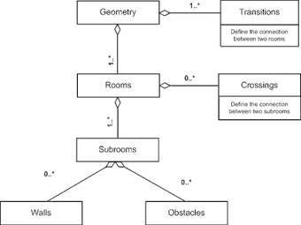
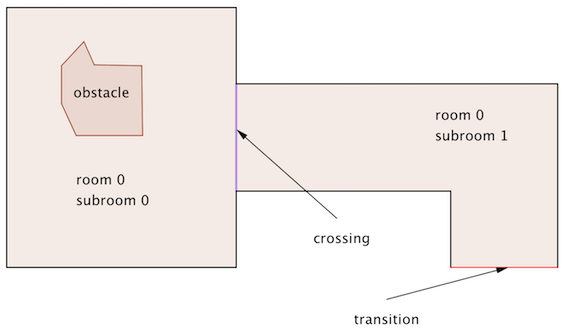
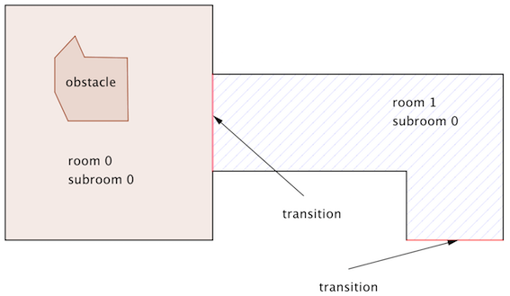

Geometry
In JPSreport geometry file use the same format and definitions as in JPScore.
The main structure of the geometry file is as follows

Following picture shows a sample geometry with one room, two subrooms and one obstacle.

subrooms and rooms are two different concepts to organize a geometry.
Basically, it is up to the user to organize its geometry “roomwise” or “subroomwise”.
For instance the above mentioned geometry could also be organized using two rooms as follows: 
A geometry can be produces manually (for small scenarios) or with jpseditor. In both cases it is recommended to visualize the geometry once finishedwith jpsvis.
The main components of a geometry are:
Rooms
The geometry contains at least one room and one transition.
Each room has a unique id, an optional caption and at least one subroom.
Two rooms are separated by either walls or transitions.
<rooms>
<room id="0" caption="hall" >
</rooms>
Subrooms
Subrooms define the navigation mesh, i.e the walkable areas in the geometry.
Each subroom is bounded by at least one crossing.
Here a sample:
<subroom id="1" class="stair" A_x="−1.2" B_y="0" C="0">
<polygon caption="wall">
<vertex px="0.0" py="1.0"/>
<vertex px="−5.0" py="1.0"/>
</ polygon>
<polygon caption="wall">
<vertex px="0.0" py="3.0"/>
<vertex px="−5.0" py="3.0"/>
</ polygon>
<up px="−5.0" py="2"/>
<down px="0.0" py="2"/>
</subroom>
idmandatory parameter, also referred by crossings and transitions.classoptional parameter defining the type of the subroom. At the moment two classes are defined:floorstairstake additionally<up px="-5.0" py="2" />and<down px="0.0" py="2" />, which are used for visualisation purposes.-
are optional parameter for the explicit plane equation of the subroom, for the construction of a 3D environment and should be used to describe stairs.
The plane equation is given by: . For instance, if the stair goes through the following points: then the equation is given by: . -
polygondescribes the walls as a sequence of vertexes.
To ease navigation, it is recommended to always use convex subrooms. In the case the subroom is not convex, additional navigation lines might be required or the floor field router should be used.
Note: Every room has at least one subroom.
Obstacles
One or more obstacles can also be defined within a subroom.
Note: Obstacles should not intersect with other geometry elements e.g. walls, crossings or transitions.
Sample obstacle in a subroom
<obstacle id="0" caption="table" height="1.0" >
<polygon>
<vertex px="12.0" py="6.0"/>
<vertex px="13.0" py="6.0"/>
<vertex px="13.0" py="5.5"/>
<vertex px="12.0" py="5.5"/>
<vertex px="12.0" py="6.0"/>
</polygon>
</obstacle>
id, mandatory unique identifier for this obstacle.caption, used in the visualisation.height, optional parameter, not used at the momentpolygon, describing the obstacle as a sequence of vertex.
Transitions
A transition defines the connection between two rooms and is basically a door.
It can be close or open (see “traffic constraints”).
An example transition between two rooms
<!-- exits between rooms or to outside (room with index = -1) -->
<transition id="1" caption="main exit" type="emergency"
room1_id="0" subroom1_id="1" room2_id="-1" subroom2_id="-1">
<vertex px="15.0" py="-5.0"/>
<vertex px="17.0" py="-5.0"/>
</transition>
id, mandatory unique identifier. Theidis also used to close or open the door in the “traffic constraints” section of the inifile.caption, optional, used in the visualisation.type, optional.room1_id, the first room sharing this transition. The order is not important.subroom1_id, the firstsubroomlocated inroom_1.room2_id, the second room sharing this transition. The order is not important. If there is no second room (meaning this transition is connected to the outside), then use-1.subroom2_id, the secondsubroomsharing this transition. The order is not important. If there is no secondsubroom(meaning this transition is connected to the outside), then use-1.vertex: define two ending points of thetransition.
Crossings
A crossing defines the connection between two subrooms inside the same room.
Unlike transition, they are always open.
A sample crossing between two subrooms
<!-- virtual exits between subrooms -->
<crossing id="0" subroom1_id="0" subroom2_id="1">
<vertex px="10.0" py="6.0"/>
<vertex px="10.0" py="4.0"/>
</crossing>
id, mandatory unique identifier for thiscrossing.subroom1_id, the firstsubroomsubroom2_id, the secondsubroomsharing this transition. The order is not important. If there is no second subroom (meaning this transition is connected to the outside), then use-1.vertex: define two ending points of thecrossing.